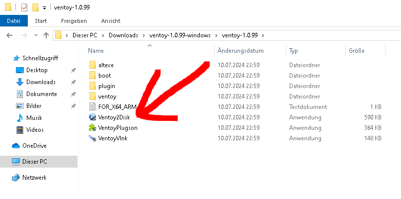
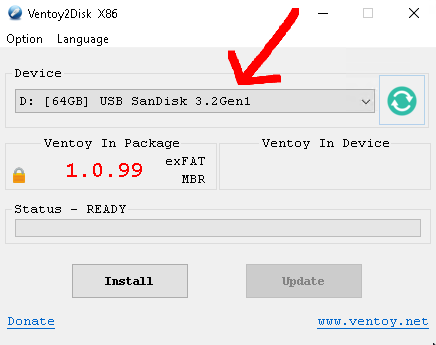
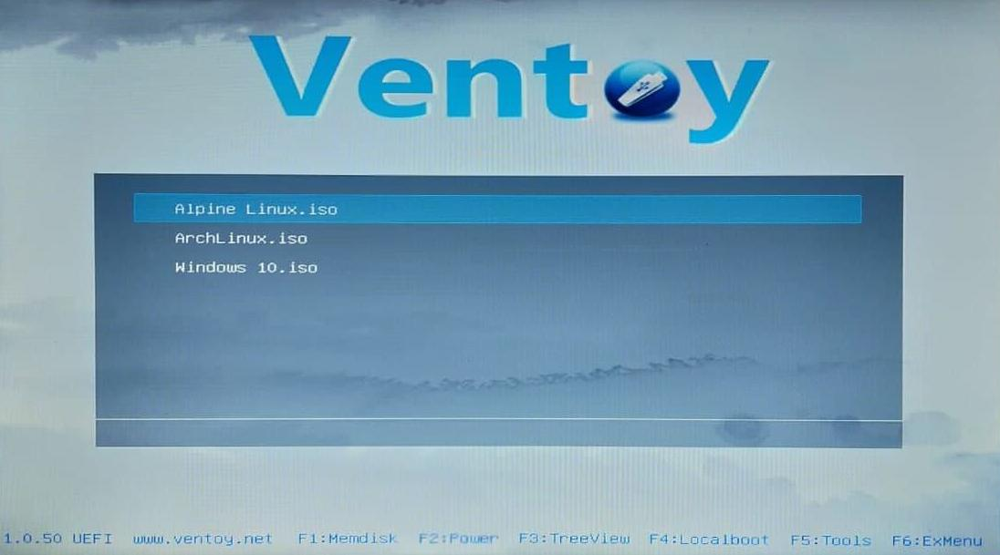

BytesOfProgress
Wiki
Ventoy USB Setup
Ventoy lets you copy multiple ISO files to a USB-drive and boot from any of them without reformatting the drive.
The process of setting up a Ventoy USB is way easier & simpler on Windows compared to Linux. That is why I show the process on a Windows 10 Machine.
What you will need: A Windows PC, a USB Flash Drive (the bigger the better, preferably formatted in NTFS filesystem).
Setting it up
Step 1: Download the Windows version of Ventoy and extract the files of the ZIP-Archive.
Step 2: Insert the USB-Drive into your Windows computer.
Step 3: Execute the following file (Ventoy2Disk.exe):

Step 4: Here you can choose your USB-Drive and then hit install!

After that, you are done! You can now navigate to the USB-Drive (it is called "Ventoy" now) and just transfer multiple ISOs to the root of the USB.
When you then insert your Ventoy USB into another computer and boot from it, you can choose which ISO to boot from:

back